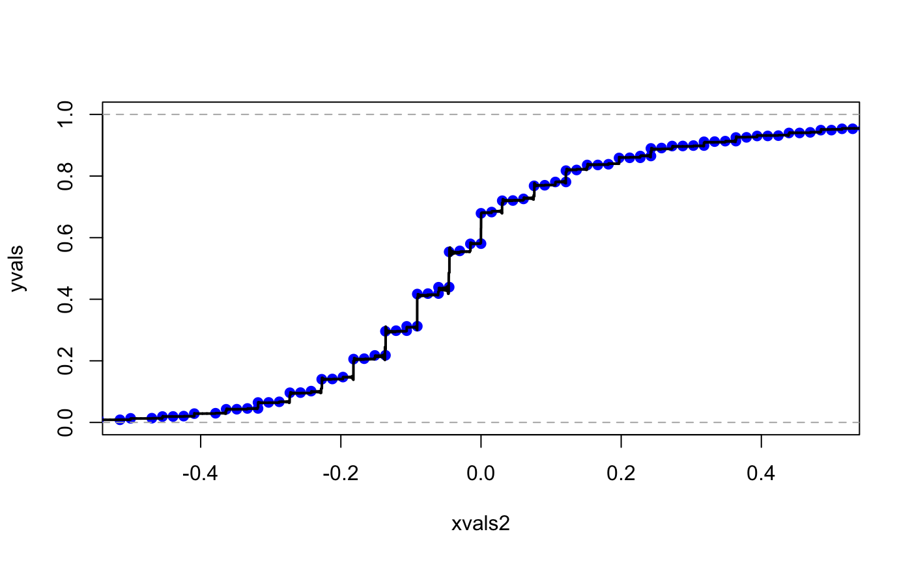
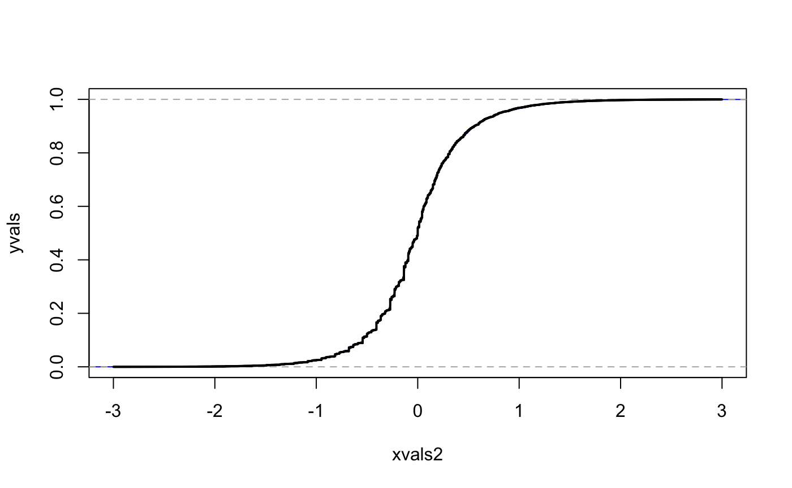
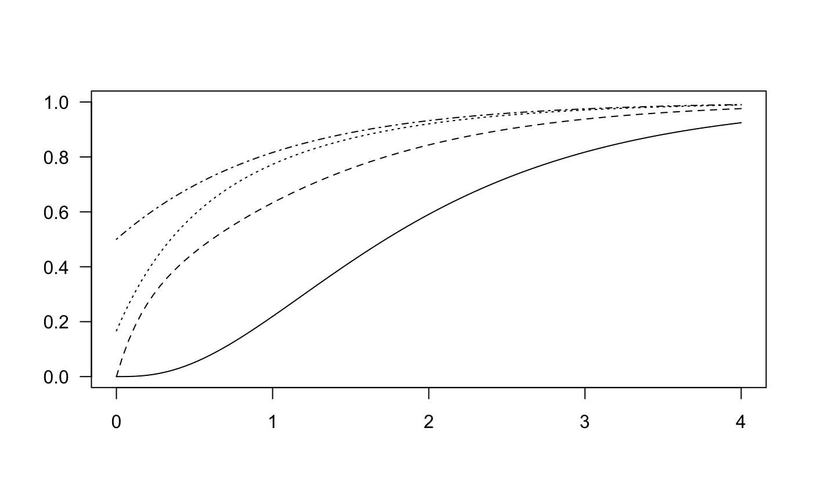
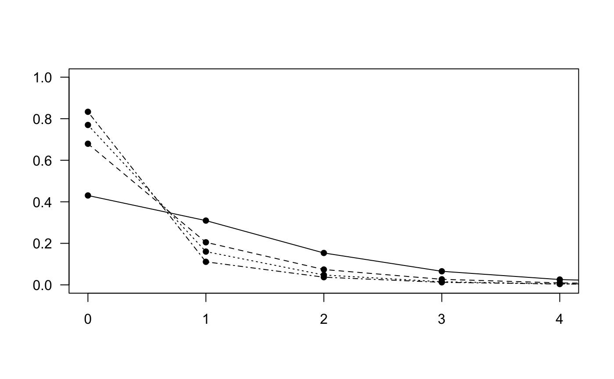
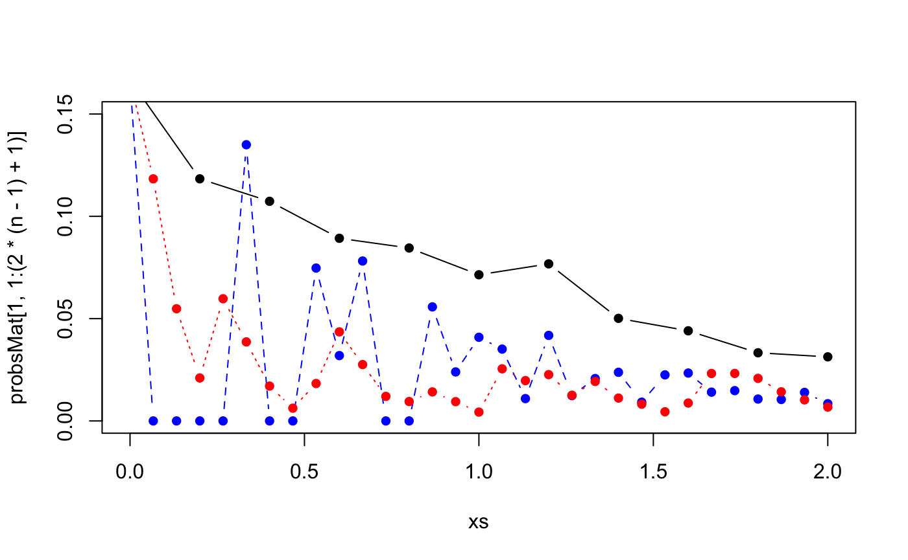

1. Introduction
TODO: Check final references to paper.
Here we recreate the figures from the paper and give more example of how to use the phase-type representation of the block counting process.
library(phasty)
On p. 55 of Durrett (2008) the numerical values of the covariances between the entries of the site frequency spectrum for \(n=8\) are computed and from eqn (eq:covmatdecomp) in (2020) we know that the off-diagonal entries of the covariance matrix of the site frequency spectrum are proportional to the covariance matrix of the underlying phase-type distribution.
n <- 8 ph_rew_obj <- block_counting_process(n) # Create the phasetype distribution with rewards associated the block counted process with n = 8 Covmat <- var(ph_rew_obj) # Compute the covariance matrix round(0.25*Covmat,4) #> [,1] [,2] [,3] [,4] [,5] [,6] [,7] #> [1,] 0.3211 -0.0358 -0.0210 -0.0141 -0.0103 -0.0079 0.1384 #> [2,] -0.0358 0.2495 -0.0210 -0.0141 -0.0103 0.1328 -0.0356 #> [3,] -0.0210 -0.0210 0.2076 -0.0141 0.1283 -0.0346 -0.0267 #> [4,] -0.0141 -0.0141 -0.0141 0.3173 -0.0359 -0.0275 -0.0216 #> [5,] -0.0103 -0.0103 0.1283 -0.0359 0.1394 -0.0230 -0.0183 #> [6,] -0.0079 0.1328 -0.0346 -0.0275 -0.0230 0.1310 -0.0159 #> [7,] 0.1384 -0.0356 -0.0267 -0.0216 -0.0183 -0.0159 0.1224
1. Figure 1
Next, we recreate the figure in the paper. Firstly, we recreate the left figure of Figure 1.
n = 10 ph_rew_obj = block_counting_process(n) lambdavals = c(0.02,0.2,1,2,10) coef_matrix = matrix(0,length(lambdavals),n-1) nu = 1/(1:(n-1) ) for(i in 1:length(lambdavals)) { lambda = lambdavals[i] bLambda=lambda^2*var(ph_rew_obj) + lambda*diag( mean(ph_rew_obj) ) coef_matrix[i,]=solve(bLambda)%*%nu/c(nu%*%solve(bLambda)%*%nu) } plot(coef_matrix[1,],type="l",las=1,ylab="Coefficient",ylim=c(-0.5,2)) for(i in 2:length(lambdavals)) { lines(coef_matrix[i,]) }

Next, we recreate th right figure in Figure 1 (TODO)
1. Figure 2
Next, we numerically invert the characteristic function of the numerator of Tajima’s \(D\) and compare to simulated values. First, we obtain the rate-matrix and state space for the block counting process.
n = 4 # create rate-matrix and state space for block counting process RMASS = RateMAndStateSpace(n) m = dim(RMASS$RateM)[1] #(m should be equal to partitions::P(n)) # Obtain subintensity matrix subintensity_matrix = RMASS$RateM[1:(m-1),1:(m-1)] # The reward matrix is the state space matrix of the block counting process, except the row & column related to the # absorbing state. rew_mat = RMASS$StSpM[1:(m-1),1:(n-1)] ph_obj=phase_type(subintensity_matrix) #> Warning in phase_type(subintensity_matrix): The initial probability vector is #> automatically generated. ph_rew_obj=phase_type(subintensity_matrix, reward_mat = rew_mat) #> Warning in phase_type(subintensity_matrix, reward_mat = rew_mat): The initial #> probability vector is automatically generated.
Next, we simulate random site frequency spectra by using REF
R = 1e4 ph_mv_sim_obj = sim_rew_phase_type(R,ph_rew_obj) rew_dim = dim(ph_mv_sim_obj)[1] lambda = 1 ph_counts = matrix(0,rew_dim,dim(ph_mv_sim_obj)[2]) for(i in 1:rew_dim) { ph_counts[i,] = rpois(R,lambda*ph_mv_sim_obj[i,]) }
An alternative is to simulate the SFS using the coala package
library(coala) loc_length = 1e4; theta = 3 model <- coal_model(sample_size = n, loci_number = R,loc_length) + feat_mutation(theta) + sumstat_trees() + sumstat_seg_sites() stats <- simulate(model, seed = 15) out = rep(0,R) for(i in 1:R) {out[i] = length(stats$seg_sites[[i]]$position)} N=min(max(out),n) out = matrix(0,R,N) for(i in 1:R) { curcolsums = colSums(stats$seg_sites[[i]]$snps) for(j in 1:N) { out[i,j]=sum(curcolsums==j) } } out = out[,-n] sfs = out
TODO: compare
The numerator of Tajima’s \(D\) is \(\hat{\theta}_{\pi}-\hat{\theta}_{\rm W}\) so the coefficient vector \(\mathbf{c}\) is \[ c_i = \frac{1}{\binom{n}{2}} i (n-i) - \frac{1}{\sum_{i=1}^{n-1} \frac{1}{i}} \] which is implemented below
res = 1000 bc = res*(2*((1:(n-1))*( (n-1):1))/(n*(n-1)) - 1/sum(1/(1:(n-1))))
According to REF, the characteristic function is obtained as \[ \phi(t) = \tilde{\psi}(\e^{\ih t}) \] where \[\begin{align*} \tilde{\psi}(z) \eqdef \Exp [z^{\bc^\ast \bxi}] = \balpha^\ast \left( \bS + \lambda \Delta[\bR z^\bc] \right)^{-1} \bT \bone \label{eq:phitildefun} \end{align*}\]
The next snippet implements the \(\phi\)-function
themean = mean(mean(ph_rew_obj)*bc) #the mean of the linear combination bT = subintensity_matrix #bold T bR = rew_mat #bold R bS = bT - diag(rowSums(bR)) #bold S bone = matrix(1,dim(bT)[1],1) #bold one = (1,1,...,1)^T balpha = matrix(0,1,dim(bT)[1]);balpha[1]=1 #(1,0,...,0) phi <- function(t) (exp(-1i*themean*t))*balpha%*%solve(bS+diag(c(bR%*%(exp(1i*t)^bc))) )%*%bT%*%bone
appvals=ApproxCDF(phi,H = 1e5,eta=0.001,xlim=c(-1.5*res,2.5*res)) xvals=appvals[[1]] yvals=appvals[[2]] bc2 = (1/res)*bc xvals2 = (1/res)*xvals themean2 = (1/res)*themean centered_sim2 = t(ph_counts)%*%bc2-c(themean2) ecdfobj2 = ecdf(centered_sim2) plot(xvals2,yvals,type="l",ylim=c(0,1)) lines(ecdfobj2,col="blue") lines(xvals2,yvals,lwd=2)

plot(xvals2,yvals,type="l",ylim=c(0,1),xlim=c(-0.5,0.5)) lines(ecdfobj2,col="blue") lines(xvals2,yvals,lwd=2)
 Next, we run the above code with
n = 8
#> Warning in phase_type(subintensity_matrix): The initial probability vector is
#> automatically generated.
#> Warning in phase_type(subintensity_matrix, reward_mat = rew_mat): The initial
#> probability vector is automatically generated.
Figure 4
Figures on p. 13
n = 5 # create rate-matrix and state space for block counting process RMASS = RateMAndStateSpace(n) m = dim(RMASS$RateM)[1] #(m should be equal to partitions::P(n)) # Obtain subintensity matrix subintensity_matrix = RMASS$RateM[1:(m-1),1:(m-1)] # The reward matrix is the state space matrix of the block counting process, except the row & column related to the # absorbing state. rew_mat = RMASS$StSpM[1:(m-1),1:(n-1)] ph = phase_type(subintensity_matrix) #> Warning in phase_type(subintensity_matrix): The initial probability vector is #> automatically generated. ph_rew_obj=reward_phase_type(ph, rew_mat[,1]) plot(1, type="n", xlab="", ylab="", xlim=c(0, 4), ylim=c(0, 1),las=1) for(i in 1:(n-1)) { ph_rew_obj=reward_phase_type(ph, rew_mat[,i]) bone = matrix(1,length(ph_rew_obj$init_probs),1) abstime <- function(u) { 1 - ph_rew_obj$init_probs%*%expm(ph_rew_obj$subint_mat*u)%*%bone } abstime = Vectorize(abstime) curve(abstime,lty=i,add=TRUE) }

plot(1, type="n", xlab="", ylab="", xlim=c(0, 4), ylim=c(0, 1),las=1) for(i in 1:(n-1)) { ph_rew_obj=reward_phase_type(ph, rew_mat[,i]) bS = ph_rew_obj$subint_mat bM = solve(diag(dim(bS)[1])-2*bS) bpi = ph_rew_obj$init_probs bone = matrix(1,diag(dim(bS)[1],1)) bm = bone - bM%*%bone probs = apply(matrix(0:5),1,function(i) bpi%*%(bM%^%i)%*%bm) probs[1] = probs[1] + ph_rew_obj$defect points(0:5,probs,pch=16) lines(0:5,probs,lty=i) }

Figure 6
n = 4 # create rate-matrix and state space for block counting process RMASS = RateMAndStateSpace(n) m = dim(RMASS$RateM)[1] #(m should be equal to partitions::P(n)) # Obtain subintensity matrix subintensity_matrix = RMASS$RateM[1:(m-1),1:(m-1)] ph = phase_type(subintensity_matrix) #> Warning in phase_type(subintensity_matrix): The initial probability vector is #> automatically generated. # The reward vector is the rows sums of the state space matrix bC = RMASS$StSpM[1:(m-1),1:(n-1)] br = rowSums(bC) ph_rew_obj=reward_phase_type(ph, br) bS = ph_rew_obj$subint_mat lambda = 1/2 bM = solve(diag(dim(bS)[1])-(1/lambda)*bS) m = m - 1 baMat = matrix(c(1:(n-1),(1:(n-1))*((n-1):1),(1:(n-1))^2),n-1,n-1,byrow=TRUE) #baMat = matrix(c(1,2,3,3,4,3,1,4,9),3,3,byrow=TRUE) len = n*(n-1)+1 probsMat = matrix(0,3,len) for(i_outer in 1:3) { ba = baMat[i_outer,] sizes_of_blocks = rep(0,m) for(i in 1:m) { sizes_of_blocks[i]=max(ba*(bC[i,] > 0)) } i = 4 bmvec = rep(0,sizes_of_blocks[i]) for(k in 1:sizes_of_blocks[i]) { bmvec[sizes_of_blocks[i]-k+1]=sum(bC[i,]*(ba == k)) } bmvec bMt = matrix(0,sum(sizes_of_blocks),sum(sizes_of_blocks)) for(i in 1:m) { for(j in 1:m) { if(i <= j) { bmvec = rep(0,sizes_of_blocks[j]) for(k in 1:sizes_of_blocks[j]) { bmvec[sizes_of_blocks[j]-k+1]=sum(bC[j,]*(ba == k)) } bmvec = bM[i,j]*bmvec/sum(bmvec) cur_i = sum(sizes_of_blocks[1:i]) if(j == 1) { cur_j = 1 } else { cur_j = sum(sizes_of_blocks[1:(j-1)]) + 1 } #print(cur_i) #print(cur_j) #print(bmvec) #print("--") bMt[cur_i,cur_j:(cur_j+sizes_of_blocks[j]-1)] = bmvec } if((i == j) && sizes_of_blocks[i] > 1) { size_of_current_block = sizes_of_blocks[i] cur_i = sum(sizes_of_blocks[1:i]) - size_of_current_block + 1 cur_j = sum(sizes_of_blocks[1:j]) - size_of_current_block + 2 bMt[cur_i:(cur_i + size_of_current_block - 2),cur_j:(cur_j + size_of_current_block - 2)] = diag(size_of_current_block-1) #print(cur_i) #print(cur_j) #print(bmvec) #print("--") # bMt[cur_i,cur_j:(cur_j+sizes_of_blocks[j]-1)] = bmvec } } } balpha = rep(0,dim(bMt)[1]) balpha[sizes_of_blocks[1]] = 1 #den skal starte det rigtige sted bone = matrix(rep(1,dim(bMt)[1])) bmt = bone - bMt%*%bone probs = rep(0,len) for(i in 1:len) { probs[i] = balpha%*%(bMt%^%(i-1))%*%bmt } #probsMat[i_outer,] = c((1-rowSums(bM)[1]),probs) probsMat[i_outer,] = probs } #xs = c(0,(1:6)/3) #plot(xs,probsMat[1,1:7],type="b",lty=1,pch=16,ylim=c(0,0.25),col="black") #xs = c(0,(1:12)/6) #points(xs,probsMat[2,],type="b",lty=2,pch=16,col="blue") #points(xs,probsMat[3,],type="b",lty=3,pch=16,col="red") xs = c(0,(1:(2*(n-1)))/(n-1)) plot(xs,probsMat[1,1:(2*(n-1)+1)],type="b",lty=1,pch=16,ylim=c(0,0.25),col="black") xs = c(0,(1:((n*(n-1))))/(n*(n-1)/2)) points(xs,probsMat[2,],type="b",lty=2,pch=16,col="blue") points(xs,probsMat[3,],type="b",lty=3,pch=16,col="red")

# ----------------- n = 6 ---------------- n = 6 # create rate-matrix and state space for block counting process RMASS = RateMAndStateSpace(n) m = dim(RMASS$RateM)[1] #(m should be equal to partitions::P(n)) # Obtain subintensity matrix subintensity_matrix = RMASS$RateM[1:(m-1),1:(m-1)] ph = phase_type(subintensity_matrix) #> Warning in phase_type(subintensity_matrix): The initial probability vector is #> automatically generated. # The reward vector is the rows sums of the state space matrix bC = RMASS$StSpM[1:(m-1),1:(n-1)] br = rowSums(bC) ph_rew_obj=reward_phase_type(ph, br) bS = ph_rew_obj$subint_mat lambda = 1/2 bM = solve(diag(dim(bS)[1])-(1/lambda)*bS) m = m - 1 baMat = matrix(c(1:(n-1),(1:(n-1))*((n-1):1),(1:(n-1))^2),n-1,n-1,byrow=TRUE) #baMat = matrix(c(1,2,3,3,4,3,1,4,9),3,3,byrow=TRUE) len = n*(n-1)+1 probsMat = matrix(0,3,len) for(i_outer in 1:3) { ba = baMat[i_outer,] sizes_of_blocks = rep(0,m) for(i in 1:m) { sizes_of_blocks[i]=max(ba*(bC[i,] > 0)) } i = 4 bmvec = rep(0,sizes_of_blocks[i]) for(k in 1:sizes_of_blocks[i]) { bmvec[sizes_of_blocks[i]-k+1]=sum(bC[i,]*(ba == k)) } bmvec bMt = matrix(0,sum(sizes_of_blocks),sum(sizes_of_blocks)) for(i in 1:m) { for(j in 1:m) { if(i <= j) { bmvec = rep(0,sizes_of_blocks[j]) for(k in 1:sizes_of_blocks[j]) { bmvec[sizes_of_blocks[j]-k+1]=sum(bC[j,]*(ba == k)) } bmvec = bM[i,j]*bmvec/sum(bmvec) cur_i = sum(sizes_of_blocks[1:i]) if(j == 1) { cur_j = 1 } else { cur_j = sum(sizes_of_blocks[1:(j-1)]) + 1 } #print(cur_i) #print(cur_j) #print(bmvec) #print("--") bMt[cur_i,cur_j:(cur_j+sizes_of_blocks[j]-1)] = bmvec } if((i == j) && sizes_of_blocks[i] > 1) { size_of_current_block = sizes_of_blocks[i] cur_i = sum(sizes_of_blocks[1:i]) - size_of_current_block + 1 cur_j = sum(sizes_of_blocks[1:j]) - size_of_current_block + 2 bMt[cur_i:(cur_i + size_of_current_block - 2),cur_j:(cur_j + size_of_current_block - 2)] = diag(size_of_current_block-1) #print(cur_i) #print(cur_j) #print(bmvec) #print("--") # bMt[cur_i,cur_j:(cur_j+sizes_of_blocks[j]-1)] = bmvec } } } balpha = rep(0,dim(bMt)[1]) balpha[sizes_of_blocks[1]] = 1 #den skal starte det rigtige sted bone = matrix(rep(1,dim(bMt)[1])) bmt = bone - bMt%*%bone probs = rep(0,len) for(i in 1:len) { probs[i] = balpha%*%(bMt%^%(i-1))%*%bmt } #probsMat[i_outer,] = c((1-rowSums(bM)[1]),probs) probsMat[i_outer,] = probs } xs = c(0,(1:(2*(n-1)))/(n-1)) plot(xs,probsMat[1,1:(2*(n-1)+1)],type="b",lty=1,pch=16,ylim=c(0,0.15),col="black") xs = c(0,(1:((n*(n-1))))/(n*(n-1)/2)) points(xs,probsMat[2,],type="b",lty=2,pch=16,col="blue") points(xs,probsMat[3,],type="b",lty=3,pch=16,col="red")

Durrett, Richard. 2008. Probability Models for Dna Sequence Evolution. Springer Science & Business Media.
Hobolth, A, M. Bladt, and L. A. Andersen. 2020. “Multivariate Phase-Type Theory for the Site Frequency Spectrum.”